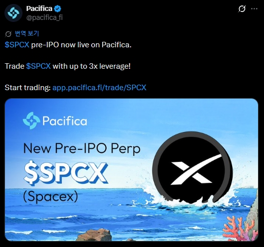

SPCX Pre-IPO Trading is Live on Pacifica
The line between crypto and traditional markets keeps getting thinner. Pacifica has introduced SPCX, a SpaceX pre-IPO perpetual market with up to 3x leverage.
This feels like another glimpse into the future of onchain trading. Private-company exposure, perpetual markets, and crypto-native access are now crossing paths.

Why SPCX Is Getting Attention
SPCX represents synthetic exposure to one of the world's most talked-about private companies: SpaceX. Instead of waiting for a traditional IPO, traders can speculate on price movement through perpetual markets.
Pacifica currently supports up to 3x leverage for the SPCX market. As always, low liquidity and volatility risks should be considered carefully.
Future of Perpetual Markets
From Bitcoin and Ethereum to pre-IPO private company exposure, perpetual DEX platforms continue evolving rapidly. Projects like Pacifica are pushing crypto trading into increasingly experimental territory.
This page is a simple record of the SPCX market becoming available on Pacifica and a quick gateway for users who want to explore it.